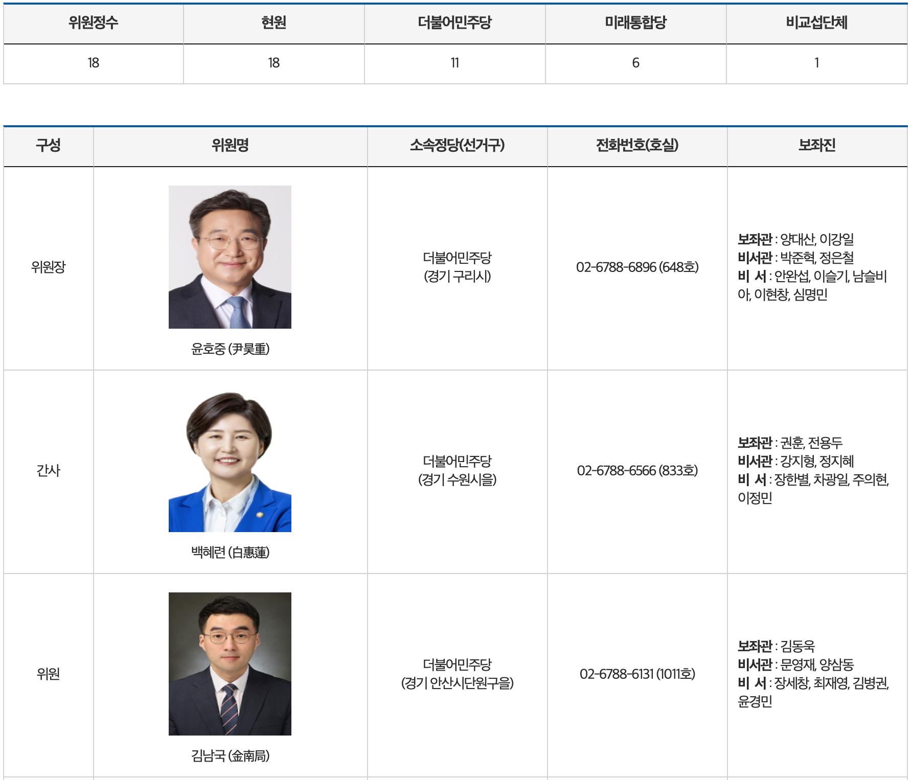
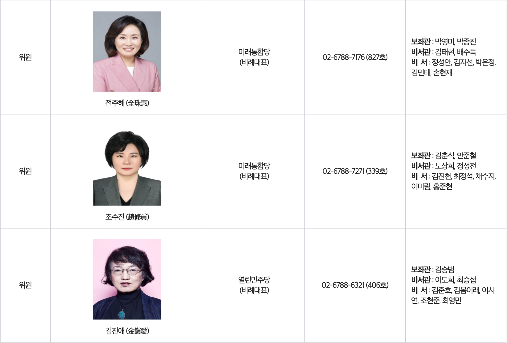

공부도 할겸, 상임위 현황 정리해봅시다!!!
대한민국 국회 (국회홈페이지 이미지들을 활용해서 작성했습니다.)

(그림을 보면,, 빨간체크 한 '위원회 회부'가 있죠!)
(회의록을 보면, 발의된 안건들이 정말 많은데,, 이게 위원회를 거쳐 상정 되어야,
저~~ 아래 표결까지 갈 수 있고.. 그래서..위원회가 정말 중요한 것 같음)
그리고,,지난 법사위 중 명장면!! 여상규 위원장님의, "웃기고 앉아있네! 빙신 같은게~!!!"
유툽영상 참고
아마 이때, 국회선진화법을 어겨서(빠루!ㅋ) 문제가 된 의원들을 수사해야 되냐,
말아야 되냐..등의 논쟁하는데, 위원장이 수사를 하지 말아야 한다는 발언이 문제가 된 것으로 알고 있음
(위원장이 그런 권한이 있는건가? 없는건가?)
말 나온김에,, 우선 법사위부터!!! 보시죠!
음..저도 잘 모르니, 법제사법위원회 홈페이지를 들어가보죠..
우선,,위원회 소개를 보니, 개관에 소관사항을 소개하고 있네요
소관사항
가. 법무부소관에 속하는 사항
나. 법제처소관에 속하는 사항
다. 감사원소관에 속하는 사항
라. 헌법재판소사무에 관한 사항
마. 법원·군사법원의 사법행정에 관한 사항
바. 친일반민족행위자재산조사위원회 소관에 속하는 사항
사. 탄핵소추에 관한 사항
아. 법률안·국회규칙안의 체계·형식과 자구의 심사에 관한 사항
(흠..눈에 띄는건 친일반민족 행위자 재산조사위원회!!가 여기에 속해 있네요..
그리고, 법률안, 국회규칙안의 체계/형식과 자구의 심사... 이게 뭔이야기지? -_-;;;
법안을 심사한다는 말인거 같은데;;; 암튼 엄청 중요한 곳인듯!-_-;;;
상임위 중에서도 상원에 해당 한다는데..
아마도 내 생각에는 저 소관사항에 해당하는 법안들의 발의 되었을 경우,
법제사법위원회에서 상정 할지 말지 결정하는 곳 인듯!)
다음은 그럼, 상임위 의원분들을 살펴 봅시다!

(오! 백혜련 의원님, 김남국 의원님 아는얼굴과 이름이 나오니 무척 반갑네용! ㅎㅎ)
(크~ 김용민 의원님, 김종민 의원님, 밤범계 의원님 그리고 박주민 의원님!우와! 최강멤버네요 ㅎㅎ)
(아...........;; 여기는 아는분이 안계시네요;; 죄송함다...)
(오오오오오!!! 장제원 의원님!!! 더라이브 기억납니다!!ㅎㅎ 말을 아끼겠습니다;;ㅋ)

(진짜가 나타났다! 알쓸신잡에서 봤던 기억이,,새록새록,,건축 얘기를 많이 하셨던거 같은데..)법사위는 여기까지하고,, 법사위에 대한 궁금한점이 있으면 또 공부해서 업데이트 하겠습니다.
상임위 공부하기 2탄은 다음주에~~